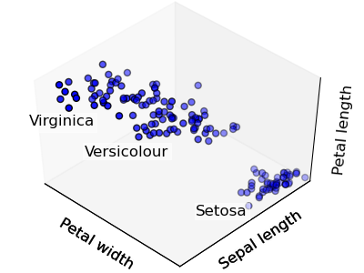

Python source code: plot_cluster_iris.py
import pylab as pl
from mpl_toolkits.mplot3d import Axes3D
from scikits.learn.cluster import KMeans
from scikits.learn import datasets
np.random.seed(5)
centers = [[1, 1], [-1, -1], [1, -1]]
iris = datasets.load_iris()
X = iris.data
y = iris.target
estimators = {'k_means_iris_3': KMeans(k=3),
'k_means_iris_8': KMeans(k=8),
'k_means_iris_bad_init': KMeans(k=3, n_init=1, init='random'),
}
fig = pl.figure(1, figsize=(4, 3))
pl.clf()
ax = Axes3D(fig, rect=[0, 0, .95, 1], elev=48, azim=134)
pl.set_cmap(pl.cm.spectral)
for name, est in estimators.iteritems():
pl.cla()
est.fit(X)
labels = est.labels_
ax.scatter(X[:, 3], X[:, 0], X[:, 2], c=labels.astype(np.float))
ax.set_xticks(())
ax.set_yticks(())
ax.set_zticks(())
ax.set_xlabel('Petal width')
ax.set_ylabel('Sepal length')
ax.set_zlabel('Petal length')
pl.savefig('%s.png' % name)
# Plot the ground truth
pl.cla()
for name, label in [('Setosa', 0),
('Versicolour', 1),
('Virginica', 2)]:
ax.text3D(X[y==label, 3].mean(),
X[y==label, 0].mean()+1.5,
X[y==label, 2].mean(), name,
horizontalalignment='center',
bbox=dict(alpha=.5, edgecolor='w', facecolor='w'),
)
# Reorder the labels to have colors matching the cluster results
y = np.choose(y, [1, 2, 0]).astype(np.float)
ax.scatter(X[:, 3], X[:, 0], X[:, 2], c=y)
ax.set_xticks(())
ax.set_yticks(())
ax.set_zticks(())
ax.set_xlabel('Petal width')
ax.set_ylabel('Sepal length')
ax.set_zlabel('Petal length')
pl.savefig('cluster_iris_truth.png')